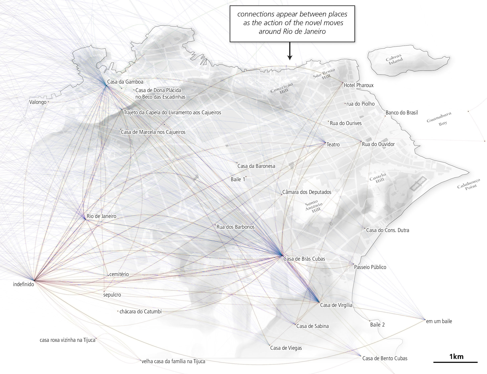

|

The Spatial History Project at Stanford University, a part of the Center for Spatial and Textual Analysis (CESTA), is made possible by the generous funding of the Vice Provost for Undergraduate Education (VPUE), DoResearch, The Andrew W. Mellon Foundation, and The Wallenberg Foundation Media Places Initiative.
About Us:
The Spatial History Project was active at Stanford University from 2007-2022, engaging in dozens of collaborative projects led by faculty, staff, graduate students, post-docs, visiting scholars and others at Stanford and beyond. More than 150 undergraduate students from more than a dozen disciplines contributed to these projects. In addition to a robust intellectual exchange built through these partnerships, research outputs included major monographs, edited volumes, journal articles, museum exhibitions, digital articles, robust websites, and dozens of lightweight interactive visualizations. For more information about the basis for the project, consult Richard White's essay "What is Spatial History?" and Erik Steiner's "Spatial History Project" articles here. This website has been preserved as a static archive of materials presented "as-is" in an effort to honor the efforts and committments of the dozens of authors, supporters, funders and others who contributed to the project. You can find the vast majority of the original digital materals on this site, some presented in an emulated Flash environment. |
|
Selected Publications:
Conservation Histories of California
Mining and Mapping the Production of Space
Conservation for the land or for the species?
A Spatial History Annotated Bibliography
The Spatial History Project
Conflict on the Q!

Follow the Money: A Spatial History of In-Lieu Programs for Western Federal Lands
Richard Pryor's Peoria Website
Mapping U.S. Post Offices in the Nineteenth-Century West
Landscape Change in Southern Brazil, from 1953 to the Present Day
A History of Bay Area Open Space Conservation
Salmon Flu Transmission in Salmon Aquaculture
|
|
Core Staff:
|